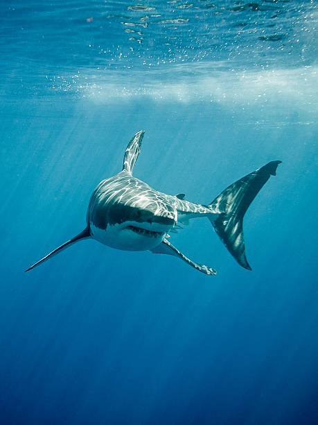

Physical characteristics
Great white sharks have a robust, torpedo-shaped body designed for powerful swimming. Their countershaded colouring—dark grey on top and white underneath—helps them blend into the ocean when viewed from above or below. Adults can weigh more than 1,000 kilograms, with females generally growing larger than males.

Teeth and jaws
Great white sharks possess several rows of triangular, serrated teeth that are continuously replaced throughout their lives. When a tooth is lost during feeding, another tooth from the row behind moves forward. This adaptation ensures that the shark always has sharp teeth available for gripping and cutting prey.
Sensory systems
- Vision: Their eyes are adapted to low-light conditions, allowing them to hunt effectively at depth and at dawn or dusk.
- Smell: Great whites can detect trace amounts of substances in the water, helping them locate injured animals over long distances.
- Electroreception: Specialised organs called the ampullae of Lorenzini enable them to sense weak electrical fields produced by other animals.
- Hearing: They are sensitive to low-frequency sounds, which can indicate struggling prey or activity near the surface.
Life cycle
Great white sharks are slow to mature and have relatively low reproductive rates. Females give birth to live young after a long gestation period, and pups are already capable predators when they are born. This slow life history makes populations vulnerable to overfishing and other human impacts, because they recover more slowly from declines.